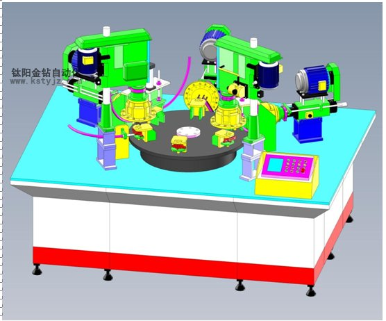
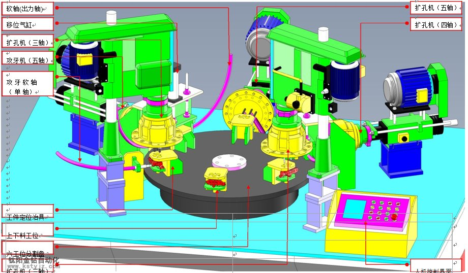
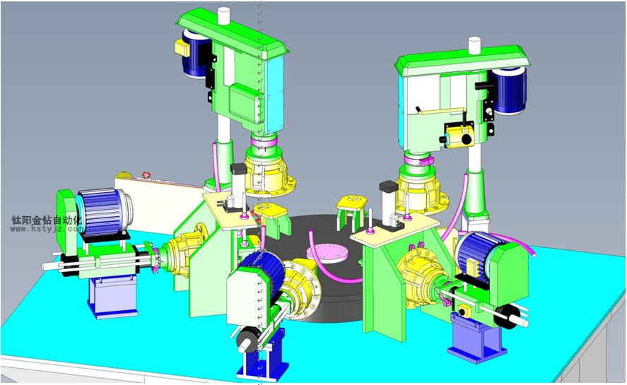
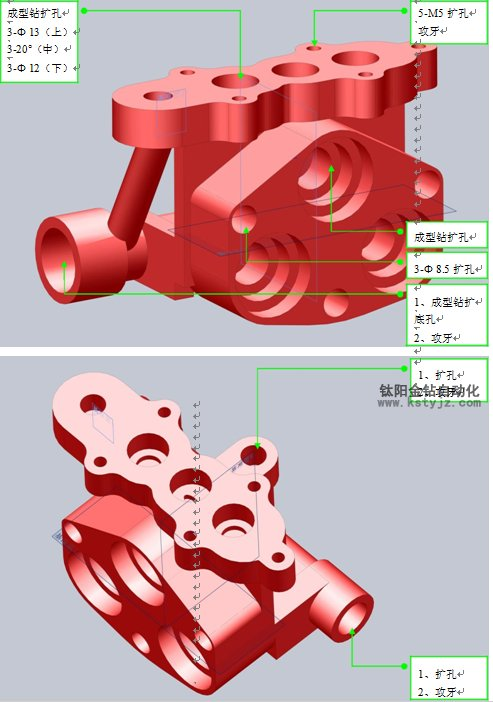

鈦陽金鑽多攻位多軸自動攻牙機
文章出處：鈦陽金鑽責任編輯：kstyjz人氣：發表時間：2014-05-09 09:27
鈦陽金鑽多攻位多軸自動攻牙機
昆山鈦陽金鑽承接各種複雜制件的加工機械設計與製作，可謂客戶訂製自動攻牙機、自動鑽孔機、鑽孔攻牙加工中心等複雜加工設備。
昆山鈦陽金鑽自動化設備有限公司多年從事自動化設備研製擁有豐富的案例經驗，本著從客戶角度出發用合理的方案嚴謹的思維來給客戶提供便利的加工環境
一 設備名稱
伺服驅動圓盤鑽孔攻牙機
二 規格/性能
1 機台尺寸：2200mm(L)X1800mm(W)X1850mm(H)； 2 電源：AC380V±10％，50HZ，
3 廠務氣源：0.5∼0.7MPa；
三 設備結構/部件
1 設備結構示意圖（見方案圖） 2.設備所採用部件
1） 立式鑽孔機（台陽金鑽牌）;
2） 立式攻牙機（台陽金鑽牌）;1 設備結構示意圖（見方案圖） 2.設備所採用部件
1） 立式鑽孔機（台陽金鑽牌）;
3） 滑軌，氣缸（Taiwan 品牌）；
4） 開關.按鈕（Taiwan 品牌）
5） 夾持治具模組
6） 振動盤
7） 精密分割器



四 制做成本
1 本設備制做數量： 1PCS。
2 制做週期
| 序號 | 項目 | 時間（工作日） | |||||||
| 1 | 設計規劃 | 2 | |||||||
| 2 | 詳細設計 | 10 | |||||||
| 3 | 零部件採購/制做 | 10 | |||||||
| 4 | 組裝 | 4 | |||||||
| 5 | 調試/試運行 | 4 | |||||||
| 合計 | 30 | ||||||||
上一篇：昆山轉盤式攻牙機、伺服攻牙機廠家 | 下一篇：長管類兩軸攻牙機自動攻牙機
推薦文章
- 影響電動攻牙機性能的
- 何以自動攻牙機可以做
- 攻螺紋前鑽底孔直徑和
- 鑽孔機如何選擇,台式自
- 攻牙油 百 科
- 自動鑽床自動攻牙機離
- SPS-全自動鑽孔倒角攻牙
- 攻牙機原理,多功能機床
- 動力頭基本構造及相關
- 自動攻牙機深孔。小孔